Objetivo
Desenvolver o projeto de uma residência unifamiliar de dois pavimentos para uma família de 5 pessoas, a partir de uma entrevista com os clientes.
Metodologia
- Programa de necessidades:
- 3 dormitórios, sendo uma suíte com closet;
- cozinha americana e claraboia;
- janela na escada com a largura da escada e cerca de dois pés-direitos de altura;
- lote de 10 × 29 m.
- Fundamentos: legislação municipal (código de obras), pedidos dos clientes, programa de necessidades e orientação solar.
- Estudo volumétrico e setorização: social, íntimo, serviços e circulação.
- Desenvolvimento do projeto até o nível de detalhamento.
Resultados
Conjunto de 11 pranchas, apresentadas uma a uma abaixo:
- Apresentação: fundamentos, estudo volumétrico, fichas técnicas e plantas humanizadas dos dois pavimentos.
- Plantas 1:50 dos pavimentos, incluindo teto verde e laje acessível.
- Fachadas leste, norte e oeste, mais vista isométrica.
- Cortes longitudinal e transversal 1:50, com detalhes 1:20 da escada, do guarda-corpo e da cobertura.
- Elevações de áreas molhadas, com tabelas de metais e louças.
- Implantação na quadra (1:100).
- Estrutura: pilares 20×40, vigas 20×40, lajes h = 14 cm e detalhamento de armaduras.
Pranchas
1. Fundamentos do projeto
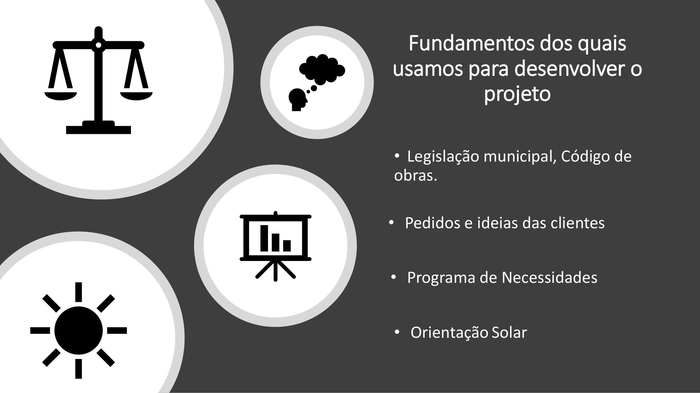
Legislação municipal e código de obras, pedidos das clientes, programa de necessidades e orientação solar. PDF da prancha
2. Estudo volumétrico
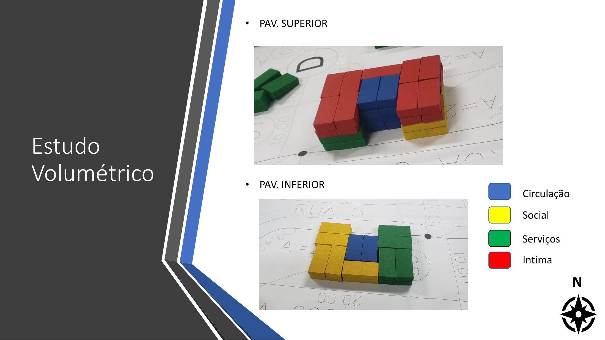
Setorização dos pavimentos superior e inferior em circulação, social, serviços e área íntima. PDF da prancha
3. Fichas técnicas
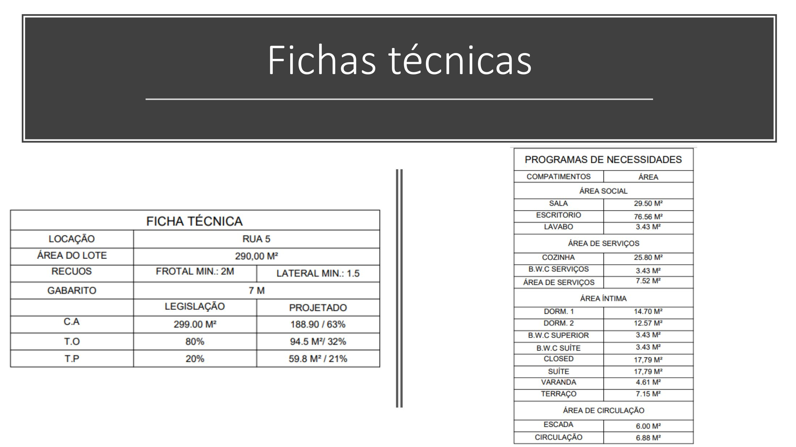
Ficha técnica do lote e programa de necessidades com as áreas previstas. PDF da prancha
4. Pavimento superior (1:50)
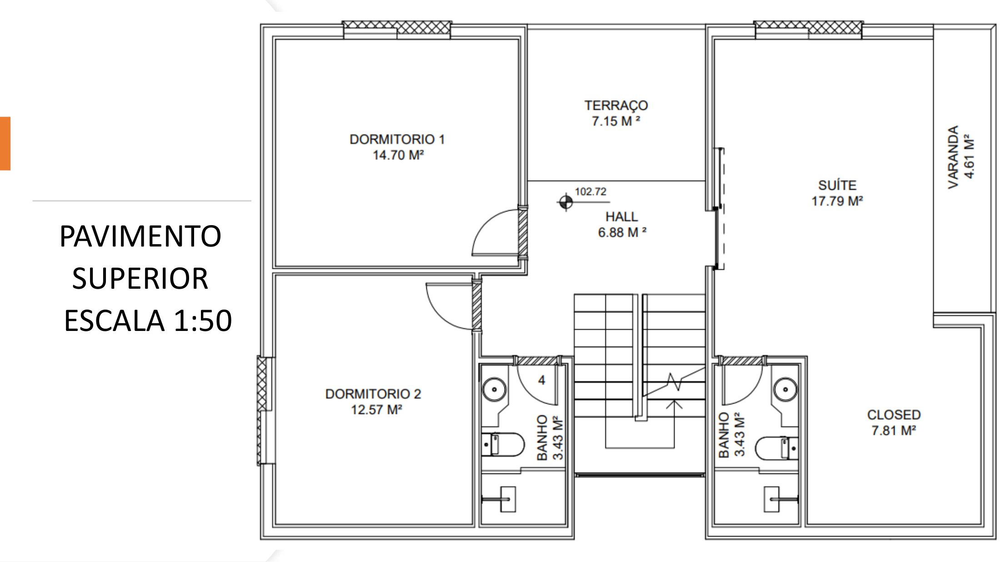
Planta humanizada do pavimento superior. PDF da prancha
5. Pavimento inferior (1:50)
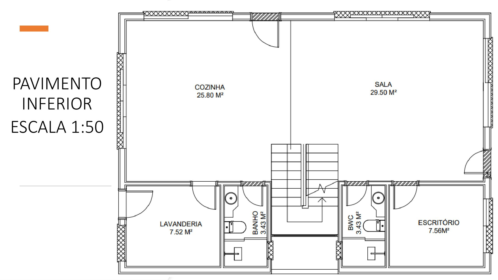
Planta humanizada do pavimento inferior. PDF da prancha
6. Prancha 1/5: plantas
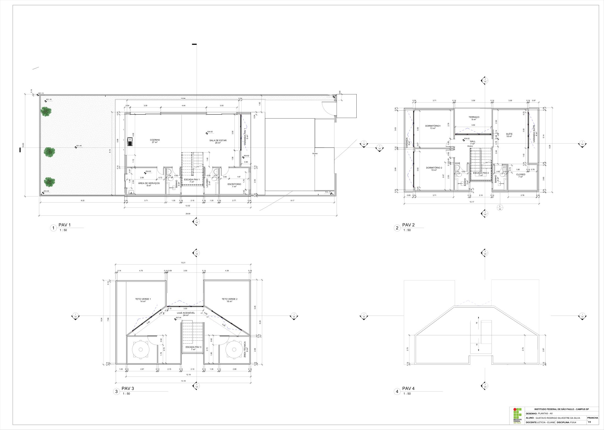
Plantas 1:50 de todos os níveis, com cotas, áreas dos ambientes e indicação de cortes. PDF da prancha
7. Prancha 2/5: fachadas e isométrica
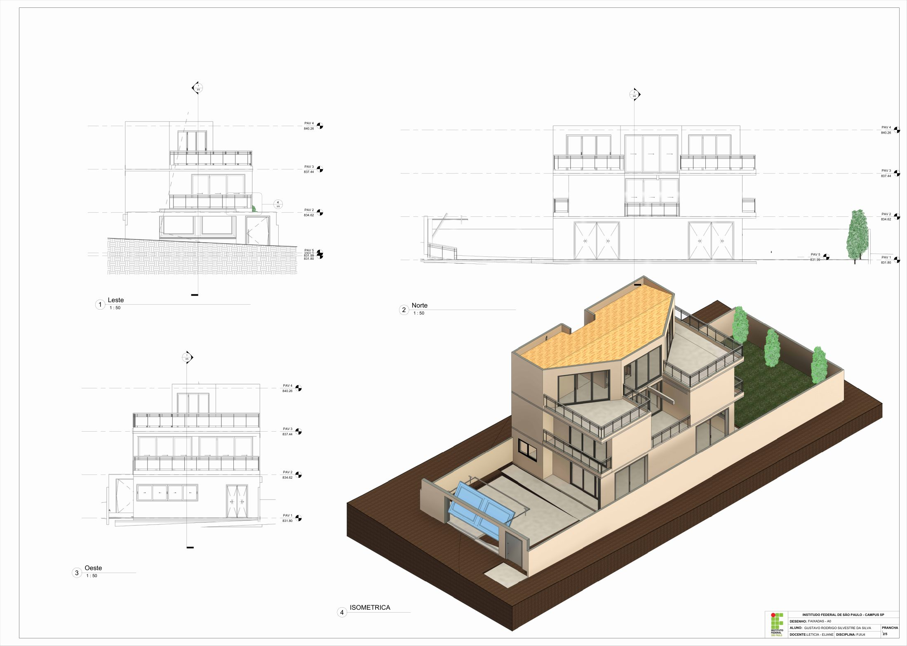
Fachadas leste, norte e oeste (1:50) e vista isométrica. PDF da prancha
8. Prancha 3/5: cortes e detalhes
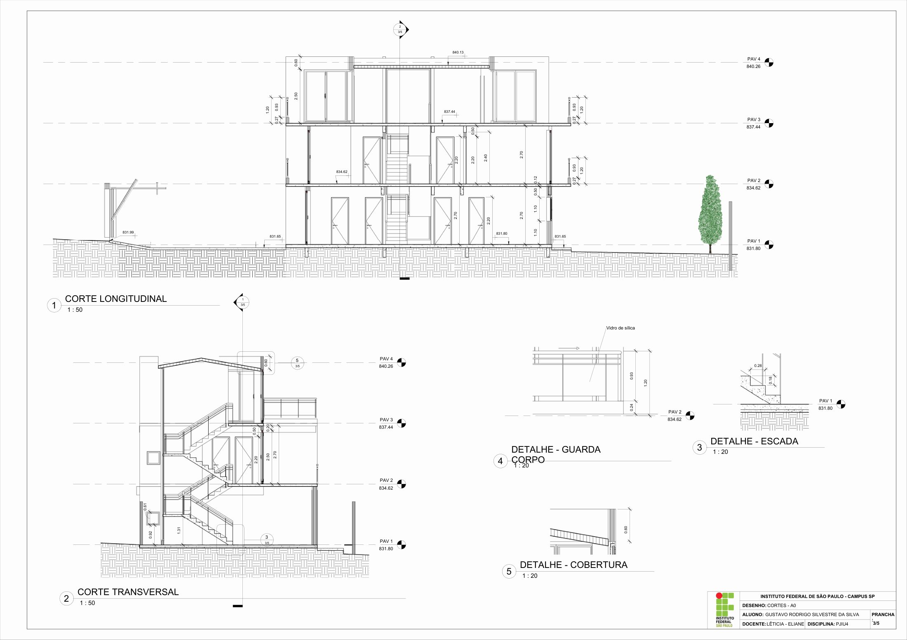
Cortes longitudinal e transversal (1:50) e detalhes da escada, do guarda-corpo e da cobertura (1:20). PDF da prancha
9. Elevações de áreas molhadas
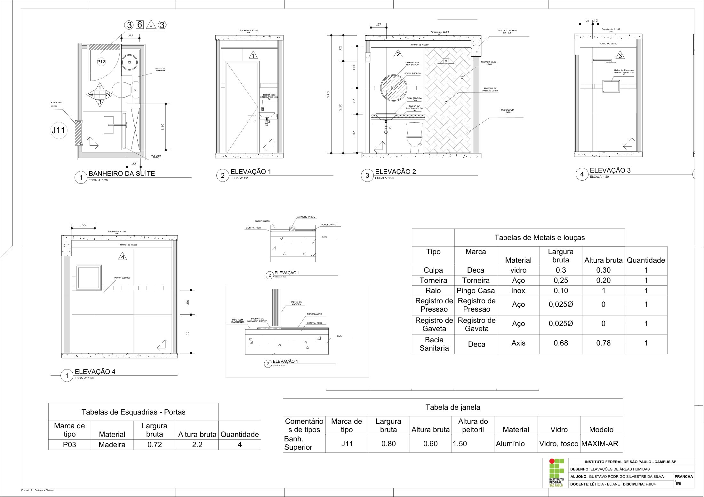
Planta e elevações do banheiro da suíte (1:20), com tabelas de esquadrias, metais e louças. PDF da prancha
10. Implantação na quadra (1:100)
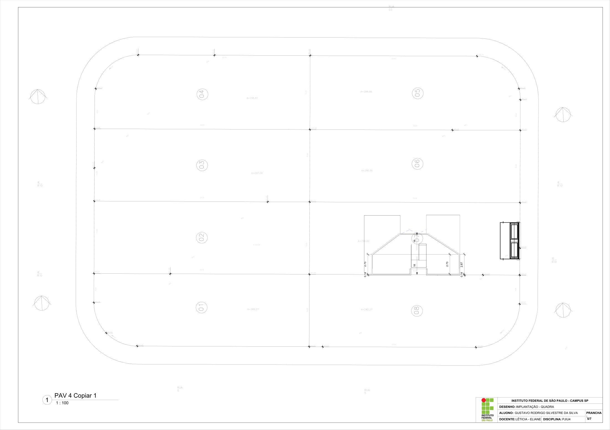
Implantação do lote na quadra, com curvas de nível e cotas. PDF da prancha
11. Estrutura
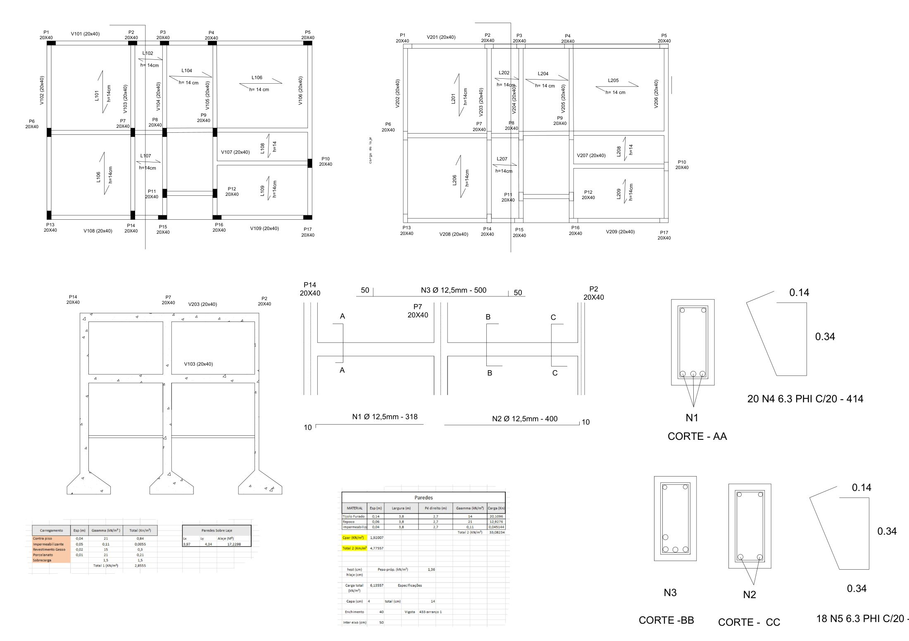
Planta de fôrmas com pilares e vigas 20×40 e lajes h = 14 cm, mais o detalhamento de armaduras das vigas (cortes AA, BB e CC). PDF da prancha
A capa e a página de entrevista do documento original foram omitidas porque continham nomes e dados pessoais.